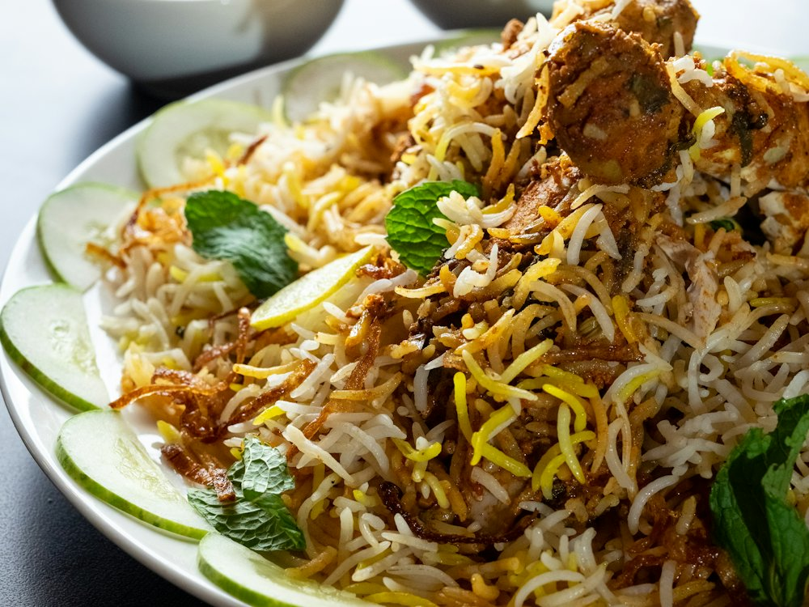

Алаша
Ресторан · Узбекская, восточная · Алматы
Рейтинг 2ГИС
★ 4.8
1 329 оценок
Год открытия
нет данных
в открытых источниках не нашли
Средний чек
≈8 000 ₸
оценка по типу заведения
Адрес и часы
📍 ул. Керей-Жанибек хандар (Оспанова), 20, Алматы · Медеуский район
🕒 часы работы уточняются — смотрите в 2ГИС
О заведении
Восточный ресторан с колоритным интерьером и залами на любой формат.
Меню
Рядом в справочнике
Або Бургер · Акжол · Алазани · Апельсиновый гусь · Афиша · Ахи Донер